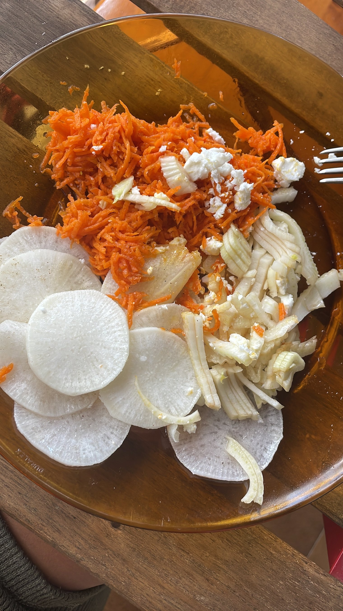

Ensalada de hinojo con vinagreta de piña de abeto, rábano negro, zanahoria y feta
Ingredients
2×
- 1 rábano negro
- 1 cdta de miel
- 1 cda de vinagre
- pimienta
- 1 bulbo de hinojo
- 1 zanahoria
- vinagreta de piña de abeto
- 50 g de feta

Preparación
Paso 1
Cortar 1 rábano negro en rodajas finas y aliñarlo con 1 cdta de miel, 1 cda de vinagre y pimienta. Dejar reposar 10min.
Paso 2
Cortar 1 bulbo de hinojo en láminas finas y rallar 1 zanahoria.
Paso 3
Montar el plato con el hinojo, el rábano y la zanahoria, aliñar el hinojo con vinagreta de piña de abeto y poner por encima 50 g de feta desmenuzado.